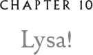

Toward the end of the blinding snow, we returned from visiting Thora one evening to find Gundesfyrr quite excited. She was almost bouncing up and down on the nest.
“It’s rocking. It’s rocking!” she exclaimed. “The egg is rocking!”
I was suddenly very frightened. “Oh! Is that bad? What does it mean?”
“It’s not bad at all. It means the chick is about to hatch.”
“Really?” I was overwhelmed with excitement. Until now, that egg had been the most boring thing in the world. “Get off. Let me see!” I shouted. Gundesfyrr lifted one leg delicately and tipped sideways, supporting herself on her starboard wing so I could have a peek beneath the bald spot on her belly. The egg was jiggling just the tiniest bit and, every once in a while, it acutally rocked.
We waited through the night, me driving Gundesfyrr mad with my questions. Every two seconds, I asked if the egg was rocking again; I was hopping from one foot to the other.
“Quit jumping around so much,” Gundesfyrr scolded.
“I’m — I’m not jumping. I am inspiring her … him, whoever!”
I even made up a little song to entice the chick to come out.
Jump, jump!
Bump, bump!
Wouldn’t it be somethin’
If you just started thumpin’.
A little crack is all you need,
No wider than a tiny seed.
It’s much more fun outside
Than in.
Now crack that egg,
Let the party begin!
“Oh, great Glaux!” Gundesfyrr’s large yellow eyes opened very wide. “I think you have inspired something. I feel the egg tooth. Time to get off.”
Gundesfyrr began raising herself off the nest very slowly, very gracefully, as if she were about to softly take flight. When she was finally off, she gave a little flip of her head, inviting me to step up to the nest. “No loud noises,” she whispered. “We want the chick to be able to concentrate. This is the hardest work it has ever had to do.”
“What work?” I asked.
“The egg tooth. Don’t you see it poking through?”
I peered. “That … that … that little thing?” It was a glistening bead no bigger than a dewdrop, peeking up from inside the egg. But it was attached to something that was alive. It was moving. “Is it really a tooth?”
“They call it that, but no. It is just a little pointy bump on the top of the chick’s beak. It’s only used for this one single purpose — to crack the egg — and will drop off a few days after the chick hatches.”
I gasped.
“Don’t worry,” Gundesfyrr said. “I’ll find it. I always do. Broodies are good at finding egg teeth.”
“Did you find mine?”
“Of course I did. Didn’t I say I always found them?”
“Is this chick ever going to get out?” I muttered.
“It’s taking a rest right now. You must be patient. As I said, this is the hardest thing this little critter has ever had to do.”
Twixt time was coming on. The light in the hollow had changed. I began to yawn; indeed I might have been half asleep when suddenly there was a crackle followed by a soft plop.
“She’s here!” Gundesfyrr exclaimed.
“Was I asleep? How could you let me fall asleep?”
“What a charmer!”
I gasped. She was, well, frankly, sort of a disaster.
“Is she breathing?” I asked.
“Of course she is. Aren’t you, sweetie?” Gundesfyrr tweeted to what I can only describe as a wet blob. “Come close, dear, take a look at your new sister.”
I was frightened. I took one tiny step. My gizzard was fluttering like my plummels in a crosswind. Now let me tell you something. The closer I came to the nest, the more nervous I got. Something deeper was stirring — a realization. And this was it: A newly hatched chick is not a thing of beauty. But it is a thing of love. My sister, Lysa, was pure love.
“Oh … oh …” I began to sputter. My gizzard had never been so stirred. I could not utter the words to express my joy, my admiration, my passion for this little, wet creature still streaked in the threads of blood from the yolk. She was covered with strange little swirls of wet fuzz, her bare flesh showed through, and her eyes were sealed shut and looked like outsized bumps on her face.
Gundesfyrr gave a mighty belch and out came some partially digested vole.
“Been saving that one for you, darling. Your first meal.”
“Is that what she eats? Throw up?”
“It’s easy on their tummies. She eats that along with the first slime from her eggshell. Chicks can’t really make pellets yet.”
I opened my beak and tried to belch but only a little squeak issued forth. “Oh, dear, I don’t think I have any of that mouse left. It’s already packed in a pellet for yarping.”
“Next time, just save some. Don’t let it go to your gizzard too fast.”
“You can do that?”
“Oh, yes, if you concentrate.” I must have looked very close to despair, for Gundesfyrr extended a wing and stroked me. “Don’t worry. There’ll be many more chances. This is what she’ll eat until her first insect.”
I had a battery of questions. My beak couldn’t keep up with my brain. “When will her eyes open?”
“Not for a while. Ten nights or more. And let’s hope at night.”
“Why?”
“Oh, daylight is much too harsh, and it’s bad luck to open your eyes in the daylight. Nighttime is owl time.”
That was all I needed to hear. I became insanely diligent watching over little Lysa. I was absolutely obsessed with the idea that she should not open her eyes in the daytime. I like to think I am a rational bird, but all reason went out the hollow when I heard this. Of course, I had no idea what I would do if she did open her eyes during daylight. Clamp my talons over them and maybe injure her by accident?
Moss’s siblings hatched out soon after Lysa. All three were little females, much to his disappointment. “I thought I would get at least one male out of the clutch,” he grumbled.
“Well, now Lysa can have three little girl friends. It will be nice for them. They’ll entertain each other and we can go off.” I nodded in the direction of the secret forge. What with all this hatching, it had been a while since we had visited Thora and we had promised to come back. I really didn’t want to leave until Lysa opened her eyes. I wanted to be the first face she saw. Maybe it was selfish. Maybe I had delusions of importance. But I was, in fact, her only blood relative around. Even though Gundesfyrr was her broody and still brooding her, for a naked little chick has nothing to protect it from the cold and we were getting the first of the dryflifa schnee, the kind of snow that clings to feathers. With it came very cold temperatures and some snurlish winds.
Several nights after Lysa hatched, I had just yarped some white-footed mouse for her when I noticed a flitter beneath the skin that covered her eyes.
“Gundesfyrr, look! I think her eyes are … are …”
First one eye slit opened and then two or three seconds later — it seemed like forever — the other one opened and a tiny voice muttered a single word.
“Again?”
“She can talk!”
“Of course she can.” Gilda slithered over. “She’s heard all of us talking for the last, what has it been? Nine nights?”
“Again?” Lysa said again.
“Again what?” I asked.
“Mouseth,” she sighed. When she spoke she had a slight lisp. It was the cutest thing ever. “Tired of mouseth. No vole?” She paused. “Pleath, Lyze.”
My heart seized, my gizzard lurched when I heard her speak my name.
“You know my name?”
“Yeth. You my big brother.” I blinked but the tears wouldn’t stop.
“Don’t cry,” Lysa chirped. “I love you. Eyes not for crying.” She opened her own so wide and began swiveling her head around like an old pro. “You Gilda?” she said, then flipped her head upside down and backward. “And you my broody, Gundie!” She took a big breath. “I LOVE LOVE LOVE all you!”

Lysa began to grow in leaps and bounds. She was the fluffiest fuzzball ever and each day there was a new achievement. She had her First Insect ceremony, then First Meat. I could hardly tear myself away from her to go visit Thora, but we did sneak off occasionally.
“I understand about little sisters.” Thora paused and seemed to gulp. We thought she was about to say something, but she turned back to her work. “You know, they grow very quickly. You should make a chart.”
“A chart?”
“Yes. Go over to my kindling pile and each of you take a big piece of birch bark and then fetch yourself a nice charred piece of wood and you’ll have a marker.”
“Now what?” Moss asked.
“Start marking down what your sisters do!”
“You mean their sky marks?” I asked. For that is the word we used for significant events in a growing owlet’s life, even before they can fly.
“Yes. You know, when they hatch, when they eat, followed by their first yarped pellet.”
It was a wonderful idea, and Moss and I both started the charts for our sisters.
“Can I put three on one chart?” Moss asked.
“I wouldn’t if I were you,” Thora advised. “They each deserve their own sky marks chart.”
I looked at Thora. She was an uncommonly intelligent owl and not that much older than we were, but somehow vastly more mature.